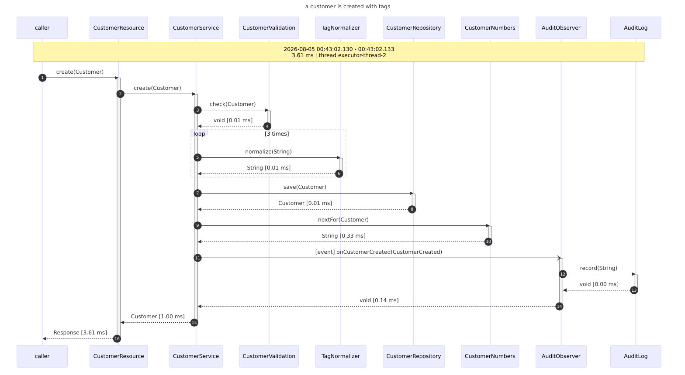
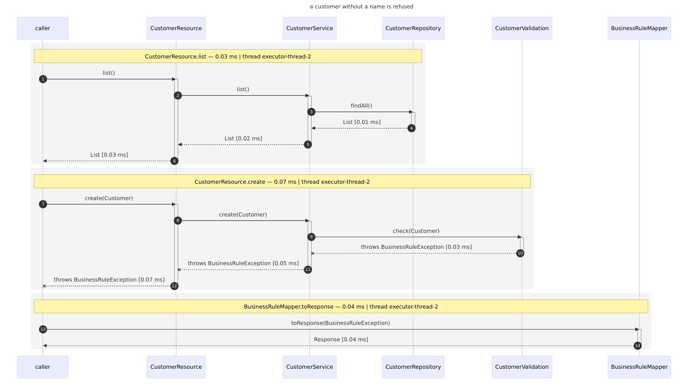
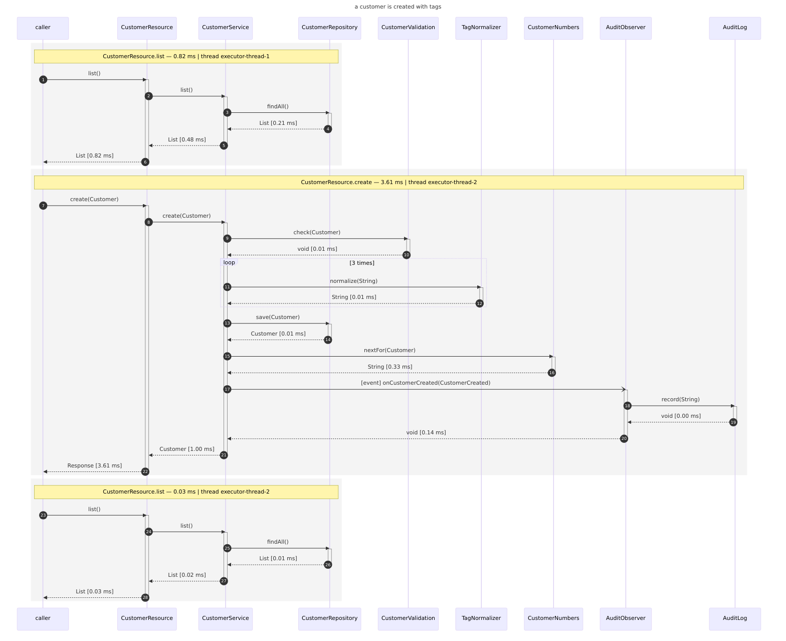

cdi-flow
Diagrams that cannot lie
Every architecture diagram starts out true. cdi-flow takes the other route: it watches a CDI application do its work and writes the sequence diagram afterwards, from what actually happened. No annotations on your beans, no drawing tool — one dependency.
You know the picture in the wiki. Six boxes, some arrows, drawn the week the service was designed and quietly wrong ever since — a call that moved, a cache that appeared, an event nobody put on the slide. Nothing tells you it has rotted, because a drawing has no relationship to the code that outgrew it.
cdi-flow inverts that. It is a portable CDI extension: while the container boots, it applies a recording interceptor to your beans; it records every public method call of the resulting call chain; and as soon as the outermost call returns it writes the chain out as a Mermaid or PlantUML sequence diagram. What you get is not a model of your application. It is a transcript.

loop 3 times is three tags going through the
normalizer, the dotted arrow with [event] is a CDI event reaching its observer,
and every duration is measured, not estimated.
Nothing in that picture was written by a human. It is one file, produced by making one HTTP request against an application that has cdi-flow on its class path.
It is a development tool. Recording every public call of every bean means an
interceptor on every bean, a growing call tree per thread and a file per outermost call. That
is exactly right for exercising one part of an application, and entirely unsuitable for a
production workload. If it ever lands on a production class path, switch it off there with
cdi-flow.enabled=false.
The five minute version
The repository ships two demo applications — the same CRUD app on Quarkus and on a Jakarta EE server. Each of them records four browser-driven use cases with one command:
git clone https://github.com/os890/dynamic-cdi-flow-renderer
cd dynamic-cdi-flow-renderer
mvn clean install -Pweld
cd cdi-flow-examples/cdi-flow-examples-quarkus-crud
./run.sh
open target/flow-diagrams/use-cases.mdThat builds the application, drives its use cases through a real browser with Playwright, and leaves you a document with a diagram per use case. The clone is for the demos: putting cdi-flow into an application of your own is a dependency and nothing else, as the next step shows. If you would rather read the rest first, here it is step by step.
Step 1 of 6
Add the dependency
Which one depends on how your container resolves its beans.
The artifacts are not on Maven Central. They are served from a plain Maven repository on GitHub
Pages, so the repository is declared once — no credentials, nothing in your
settings.xml:
<repositories>
<repository>
<id>os890</id>
<url>https://os890.github.io/os890-maven-repo/</url>
</repository>
</repositories>Weld, OpenWebBeans, or any full CDI container
The jar, and nothing else. The portable extension does the rest while the container boots.
<dependency>
<groupId>org.os890.cdi.uml</groupId>
<artifactId>dynamic-cdi-flow-renderer</artifactId>
<version>0.9.0</version>
</dependency>Quarkus
Quarkus resolves beans, interceptors and bindings while it builds the application and never runs a portable extension, so it gets an extension of its own. It attaches the recorder to the beans of your application archive — not to the hundreds a framework brings along — registers what is needed and arms the recorder at startup.
<dependency>
<groupId>org.os890.cdi.uml</groupId>
<artifactId>cdi-flow-quarkus</artifactId>
<version>0.9.0</version>
</dependency>
In dev mode and in tests it records with no configuration at all. A production build records
nothing unless you write cdi-flow.enabled=true down explicitly, which is the point.
Another build-time CDI container
cdi-flow-lite carries a build compatible extension that attaches the recorder while
the application is built. Narrow it with cdi-flow.include-pattern: without a
pattern, every eligible bean in the index is recorded.
Whatever attaches the recorder, it arms itself on the first call it sees if nothing armed it. That is deliberate: an integration should be the dependency and nothing more.
Step 2 of 6
Say where the diagrams go
Optional — the default is your temp directory, which is fine for a first look and awkward
afterwards. One property, in application.properties,
META-INF/microprofile-config.properties, a system property or an environment
variable:
cdi-flow.output-directory=target/flow-diagrams
Configuration is read through MicroProfile Config when it is available and through system
properties and environment variables otherwise, so
CDI_FLOW_OUTPUT_DIRECTORY=/tmp/flows works just as well.
Step 3 of 6
Exercise one entry point
Now do something. Run a single test, start dev mode and click one button, or make one request. A file appears per outermost call:
CustomerResource_create_20260805-002048551_20260805-002048554.mmd
│ │ │ └─ when it finished
│ │ └─ when it started
│ └─ the first public method
└─ the bean that triggered the first interceptor call
Two flows finishing in the same millisecond get a counter rather than overwriting each other.
Parameter values are never recorded — only parameter types, so no
toString() is called on your objects and no application data ends up in a file.
Step 4 of 6
Look at it
-
An IDE with a Mermaid plugin renders
.mmdas you open it. So do the usual Markdown previews if you paste the content into a fenced block. -
GitHub renders the generated
use-cases.mddirectly, because the diagrams are inlined there in Mermaid fences. -
PNG, if you want images:
./render-diagrams.sh <directory>renders every diagram below a directory in a single container run, via themermaid-cliandplantumlimages.
What you will see in the diagrams, without doing anything for it:
| In the diagram | What it means |
|---|---|
loop 3 times |
consecutive identical calls, including their whole subtree, folded into one block.
cdi-flow.fold-loops=false unfolds them
|
-) with [event] |
a CDI event reaching an observer. A synchronous event is delivered on the firing thread, so it belongs to the same chain |
--x throws … |
every frame an exception travelled through, marked. The diagram is still written, so you can see how far the chain got |
HOTSPOT … |
with cdi-flow.hotspot-threshold-ms: the innermost still-slow call
of a branch, because a caller is slow whenever its callee is
|
| plain bean names |
no _ClientProxy, no $$, no interceptor subclasses — the runtime
class is mapped back to the class you wrote
|

Step 5 of 6
Record use cases, not just calls
Here is the thing that surprises people. A flow ends when its outermost call returns, and an HTTP request is an outermost call on a thread of its own — so one browser-driven use case does not produce one diagram. It produces a series of them, one per request, and nothing in the output says which belong together.
A label fixes that. Whatever handles the request sets the use case it belongs to, and every flow
started on that thread carries it. For a REST application, cdi-flow-jaxrs reads it
from a header:
<dependency>
<groupId>org.os890.cdi.uml</groupId>
<artifactId>cdi-flow-jaxrs</artifactId>
<version>0.9.0</version>
</dependency>The Quarkus extension registers that filter for you. On the test side, one fixture is the whole integration — here with Playwright, where every request of a test carries the name of that test:
export const test = base.extend({
context: async ({ context }, use, testInfo) => {
await context.setExtraHTTPHeaders({ 'X-Flow-Label': testInfo.title });
await use(context);
},
});And then the output stops being a pile of files and becomes a report:
target/flow-diagrams/
├── use-cases.md every use case, described, diagram inlined
└── a-customer-is-created-with-tags/
├── use-case.mmd the whole use case: one block per request
├── README.md the chains it is made of, and how often each occurred
└── CustomerResource_create_….mmd one file per distinct chain
use-case.mmd is stitched from the recorded chains — their arrows copied across
unchanged, one block per request, in the order the application handled them. It has to be
stitched: no single recording can span two threads.

Two more things happen once flows are labelled. Identical chains are collapsed and counted — a suite checks the session before every request and reads the same list four times, and you want that noted, not repeated. And every diagram is titled with its use case, so a diagram copied out of a directory still says what it belongs to.
One running application serves a whole suite this way. No restart per use case, and nothing to configure per test — which is the difference between a recording run that takes a few minutes and one that takes half an hour.
Step 6 of 6
Tune it, then keep it out of production
Everything is optional, and these are the knobs worth knowing first:
| Property | Default | What it does |
|---|---|---|
cdi-flow.enabled |
true |
master switch; false keeps the extension entirely out of the way |
cdi-flow.include-pattern |
— | regex on the fully qualified bean class name |
cdi-flow.exclude-pattern |
— | a veto: removes a bean again, whatever selected it |
cdi-flow.include-stereotypes |
— | select by CDI stereotype instead of by name; stacked stereotypes count |
cdi-flow.output-directory |
temp dir | where files are written, created on demand |
cdi-flow.output-format |
mermaid |
mermaid (.mmd) or plantuml (.puml) |
cdi-flow.hotspot-threshold-ms |
— | mark the call that is actually slow |
cdi-flow.combined-exclude-pattern |
— | keep an entry point out of the combined diagram — a session check that runs before every request — while still recording it |
cdi-flow.title-diagrams |
true |
put the use case on the diagram as its title |
cdi-flow.file-header |
— | a line written as a comment at the top of every diagram — a licence header, for a build that insists on one |
The demo scripts expose the two most useful of these directly:
./run.sh --format plantuml records the same flows in the other notation, and
./run.sh --no-title leaves the use case off the diagrams.
A recording is data, not only a picture
Everything so far ends in a file you look at. But the diagram is rendered from a recorded model, and that model is available before anything is rendered. Implement one method and every finished call chain is handed to you:
public interface FlowSink {
void onFlowRecorded(CallFlow flow);
}
Register it with FlowSinks.register(sink) — which works before the container is
even booted — or simply make it a CDI bean. CallFlow gives you the whole tree, the
durations, which frames were marked as hotspots, and
toMermaid() / toPlantUml() when you do want the text after all. A
second entry point renders several collected flows as one diagram:
String diagram = CombinedFlowDiagram.of(flows, DiagramFormat.MERMAID, "an order is placed");Which raises the obvious question: if a recording is data, and the same call chain renders to the same diagram every time, why only ever read it?
Turning a recording into an assertion
That is what jawelte's
flow-assert-module does. jawelte is a separate project — a modular test framework
for CDI applications — and this module is a consumer of cdi-flow rather than a part of it. It
records the call flow of a test method and compares it against a sequence diagram checked in
beside the test:
@EnableFlowAssert
class OrderServiceFlowTest {
@Inject
private OrderService orderService;
@Test
@ExpectedFlow // flows/OrderServiceFlowTest/placesOrder.mmd
void placesOrder() {
assertThat(orderService.placeOrder("SKU-1", 2)).isEqualTo("SKU-1@5");
}
}An ordinary test pins what a call returned. This pins how it got there — which bean called which, in what order, how deep, what came back, which events fired. Delete a call, reorder two, route one through a different collaborator, and the diff is the failure:
Flow diff found 2 difference(s) against flows/order-placement.mmd (mermaid):
[chain 1, expected line 11] DIFFERENT_TARGET
expected: OrderService -> PricingService: priceOf(String)
actual: OrderService -> DiscountService: priceOf(String)
[chain 1, expected line 16] MISSING_CALL
expected: OrderService -> AuditService: log(String)
actual: <missing>The interesting design decision is what it refuses to compare. Durations, timestamps, thread names, hotspot markers and the title are rendered — so the checked-in file stays readable — but never compared, because they differ on every run. Compare them and the test is flaky by construction. What is compared is the structure: participants, calls, returned and thrown types, event arrows, folded loop counts, nesting depth, and the number and order of chains.
It writes the first expected file for you — and the run that writes it still fails, with the diagram in the message. An approval nobody looked at is not an assertion.
For cdi-flow the module is the useful kind of proof. It consumes the recorder through the two
published entry points and nothing else: CapturingFlowSink implements FlowSink
collects the chains, and the Mermaid and PlantUML dialects render them with
CombinedFlowDiagram.of(...). No fork, no reflection into internals, no copy of the
renderer. Because both dialects render through the recorder, a
use-case.mmd copied out of a real application run is a valid expected file — which
is a neat consequence of the diagram being a transcript rather than a drawing.
What it does not do
Worth knowing before you go looking for something that is not there:
-
Self-invocation is not recorded.
this.other()never leaves the instance, so no interceptor sees it. Whatever that method calls further on still appears, one level too high. This is inherent to interceptor-based recording, not a bug. - A flow does not cross threads. Each thread records its own, which keeps concurrent calls cleanly apart at the price of an asynchronous observer getting a diagram of its own.
- Only public methods are recorded, and never
Object's own. - Beans from producer methods are not managed beans, so the container never intercepts them. The producer method itself is recorded.
- A bean the container cannot subclass is skipped — a final class, a final business method, no accessible constructor. Silently, and on purpose: adding the binding anyway would turn a working deployment into one that refuses to start.
Where to go next
Read the two demo applications — cdi-flow-examples-quarkus-crud and
cdi-flow-examples-jakarta-crud. They are the same CRUD application, with the same
front-end and the same tests, on two runtimes that could hardly be less alike: one resolves its
beans while it builds the application, the other deploys a web application into TomEE — Tomcat
with OpenWebBeans and CXF. That makes them the honest answer to "how much of this is the addon
and how much is my framework": driven through both, all four recorded use cases come out
identical line for line. The only trace of the difference is in the thread names.
One thing genuinely does differ, and it is the interesting one. On Quarkus the extension knows
which beans belong to your application archive, so it records those and nothing else. On a
server, the CDI container also holds MyFaces, the REST layer and the CDI implementation itself —
so the Jakarta example sets an include-pattern, and without it records 23 bean
classes instead of 9. What a build-time extension works out for you, a portable extension has to
be told.
And that is the whole idea, really. A drawing would have shown neither, and would have been wrong about both.
The artifacts are at
os890.github.io/os890-maven-repo, the
project at
github.com/os890/dynamic-cdi-flow-renderer, and if the assertion idea is what caught your eye, the module is in
jawelte under
modules/flow-assert-module.